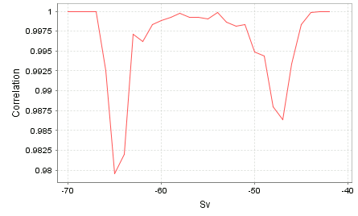

This view shows the correlation between two frequency response curves computed with slightly different upper thresholds for the currently selected region(s). The number of drops of the curve is intended to give an indication of the number of different types of scatterers in the selected region.

Each value of Sv along the horizontal axis is used as an upper threshold, and the frequency response is computed in the same way as does the Frequency response view:
s̅v(f) = (1 / Nf) ∑ sv(f)
The sum is taken over all samples in the selected region that are below this upper threshold and above the lower threshold selected in the colorbar.
The parameter Delta is used to define the other upper threshold
Sv* = Sv + Delta
that is used to compute another frequency response.
Finally, the Pearson product-moment correlation coefficient between the two frequency responses is computed and used as the value along the vertical axis.